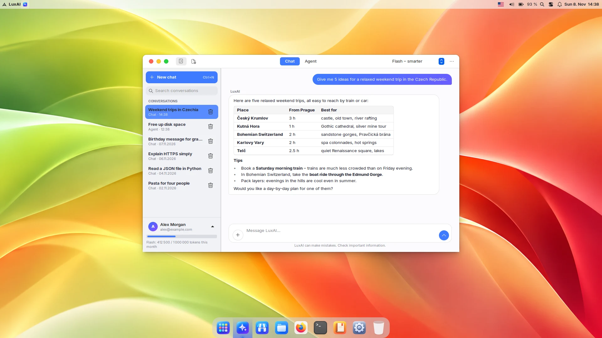

LuxAI, LuxOS'un resmî yapay zeka asistanıdır. Bu depo ise BELGESELSEMO tarafından, Z.AI desteğiyle, orijinal LuxOS 1.0.1 dağıtımından elde edilen dosyaların üzerine topluluk yamaları uygulanarak LuxOS dışındaki dağıtımlarda (Ubuntu, Debian, Fedora, Arch, openSUSE, Windows…) da çalışabilen paketler üretir. Resmî proje değildir; LuxOS projesiyle bağı yoktur. Kaynak: LuxAI dokümanları.

Akış halinde yanıtlar, Markdown, tablolar, kod blokları (kopyala düğmesi + sözdizimi renklendirme), LaTeX, sohbet geçmişi.
Komut çalıştırma, dosya yönetimi, uygulama/bağlantı açma, ekran görüntüsü, fare & klavye. LuxAI her eylemden önce sorar.
Türkçe, Rusça, Çince, Japonca, Almanca, Fransızca ve daha fazlası — %100 çeviri dosyalarıyla. Sistem dili dinamik algılanır; yoksa İngilizce.
Hassas dosyalar ek onay ister; tehlikeli komutlar iki kez onaylanır; bazı işlemler her koşulda reddedilir. İstem-enjeksiyonu koruması.
Çevrimdışı LSL/LuxOS kılavuzunda arama ve okuma — internet olmadan da.
LuxAI-Setup.exe, WSLg ile gerçek LuxAI penceresini Windows 11'de çalıştırır; Başlat menüsü kısayolu oluşturur.
| Kurulum | Komut |
|---|---|
| Debian / Ubuntu / Mint | sudo apt install ./luxai_3.1.0_amd64.deb |
| Fedora / openSUSE | sudo dnf install ./luxai-3.1.0-1.x86_64.rpm |
| Arch | sudo pacman -U luxai-3.1.0-1-x86_64.pkg.tar.zst |
| Herhangi bir dağıtım | ./LuxAI-3.1.0-x86_64.AppImage |
| Tek satır | curl -fsSL https://raw.githubusercontent.com/vesvese55x/LuxAI-the-AI-assistant-for-LuxOS/main/belgeselsemo-luxai-installer | sh |